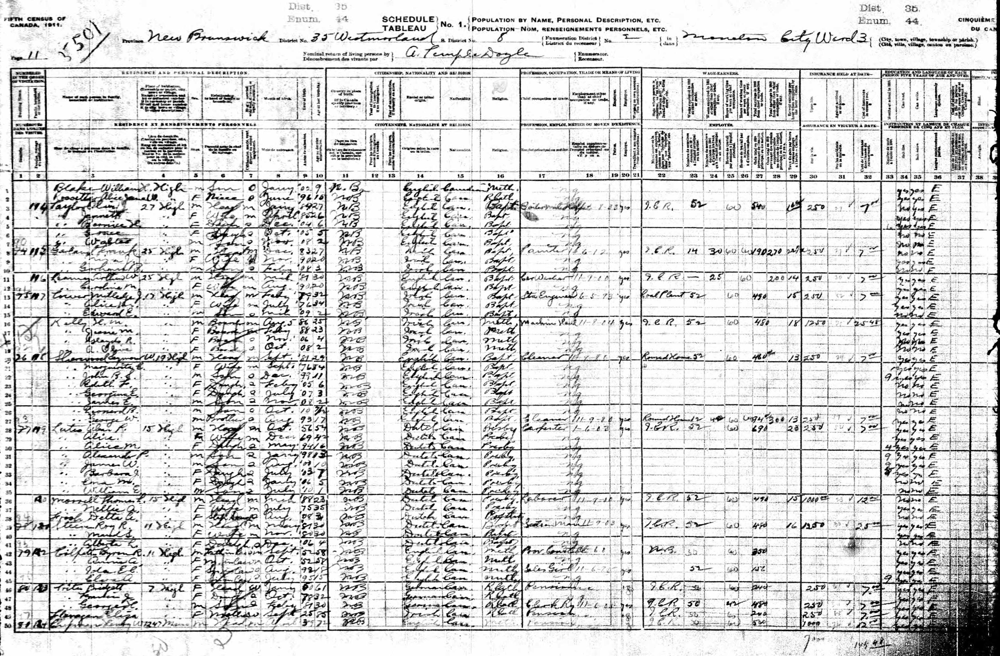
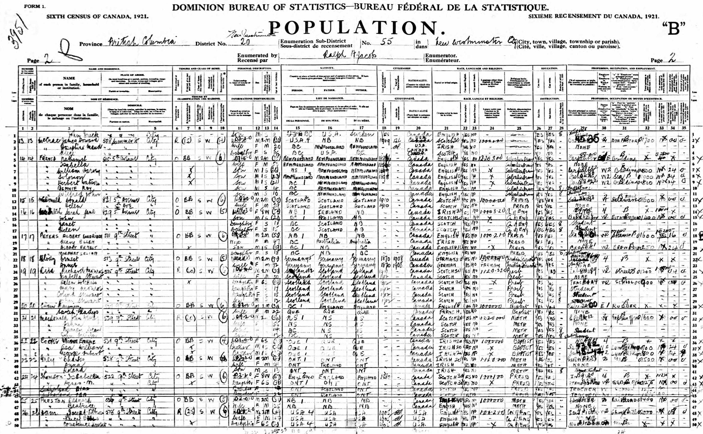
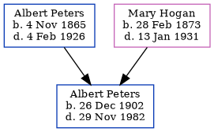

Albert Ernest Peters 1902 - 1982
[ Home ] | [ Calendar ] | [ Surnames Index ] | [ Errors ] | [ Family History ]The child of Albert Peters (a senior boat pilot) and Mary Hogan, Albert Peters, the fourth cousin once-removed on the father's side of Nigel Horne, was born in New Westminster, British Columbia, Canada on 26 Dec 19021,2,3,4.
During his life, he was living at his birthplace in 19116; and at 511 Ninth Street, British Columbia on 1 Jun 19212.
He died on 29 Nov 1982 in Surrey, British Columbia, Canada4,5.
Parents
- Capt. Albert Goodrich was born on 4 Nov 1865
- Mary Ellen was born on 28 Feb 1873
Citations
- 1911 Census of Canada Online publication - Provo, UT, USA: Ancestry.com Operations Inc, 2006. .Original data - Library and Archives Canada. Census of Canada, 1911. Ottawa, Ontario, Canada: Library and Archives Canada, 2007. http://www.collectionscanada.gc.ca/databases/census-19
- 1921 Census of Canada Ancestry.com Operations Inc (Marital Status: Single; Relation to Head of House: Son)
- British Columbia, Canada, Birth Index, 1872-1903 Ancestry.com Operations Inc
- British Columbia, Canada, Death Index, 1872-1990 Ancestry.com Operations Inc
- British Columbia, Canada, Death Index, 1872-1992 - Findmypast
- Canada Census 1911 - Findmypast (was the son of the head of the household)
Media
1911 Canada Census

1921 Canada Census

British Columbia, Canada, Birth Index, 1854–1903 Transcription - US-MCV-101185-03458499713911161307
British Columbia, Canada, Death Index, 1872–1992 Transcription - US-MCV-126823-12176507159375754682
Canada Census 1911 - CAN/CENSUS/1911/00516627
British Columbia, Canada, Death Index, 1872–1992 - US/MCV/126823/1217650715937575
Family Tree
Map
Generated by ged2site. Last updated on Jul 3, 2024
Known Issues
May have been living with mother on 1911, but the addresses don't match or aren't detailed enough to be sure
May have been living with father on 1911, but the addresses don't match or aren't detailed enough to be sure